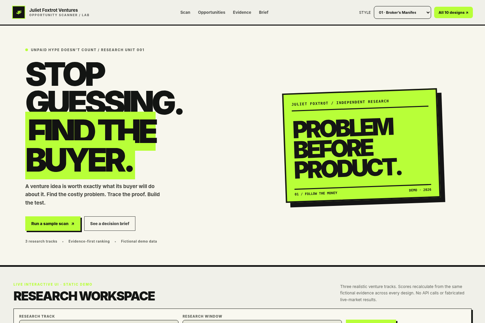

INTERACTIVE WEBSITE / 01 OF 10DESIGN VARIATION / 01Editorial / Industrial
Broker’s Manifesto
A confrontational editorial research desk. Acid-lime manifesto hero, heavy rules and a tightly organized evidence workbench.
Built from your master theme reference. Demo data only · shared research model across every design.